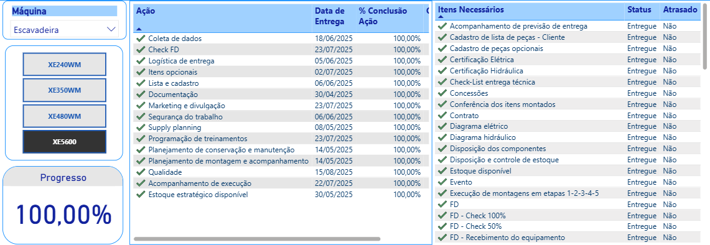
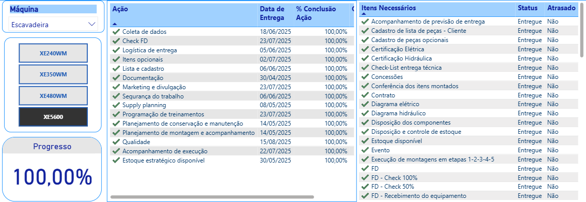

日常监测
物理可用性：徐工日常在客户身边
XCMG Brasil对其在现场的设备表现保持了不可动摇的承诺，对其在客户操作中的机器的物理可用性（DF）进行了每日详细的跟随。该监视使应用程序工程团队能够快速识别趋势，预防性采取行动并优化操作，从而确保XCMG设备可提供最大的生产率。
谷 - 每月进化
对每月DF的连续监视是应用程序工程的战略工具，可以识别季节性趋势，评估实施改进的影响以及预防措施的计划。80％的DF目标是参考参考，该参考指导团队为确保XCMG设备在现场的最高生产率而做出的努力。
北谷：透明和关注点（01/09至30/09）
东南谷：稳定性和优化点（01/09 至 30/09）
南谷：挑战和机遇（01/09至30/09）
DF品牌9月表现温和，客户数量高于或低于目标
监控不同客户9月份累计的物理可用性（DF），可以清晰地了解徐工设备的性能。从01/09到30/09的数据显示，R&D、G3等客户表现稳健，DF分别达到84.55%和85.61%，可靠性较高。与此同时，SIMAK 和 CSN 等操作记录的 DF 分别为 75.53% 和 76.81%，虽然低于 80% 的目标，但表现出一致的性能，正在监控优化。CREC-8 的案例（占 44.22%）是一个关注点，我们的技术团队已对其进行重点处理，以查明原因并实施纠正措施，加强我们对持续改进和透明度的承诺。
先进技术
遥测：连接机器、防止故障并提高效率
遥测可以揭示机器运行中的实际性能的哪些信息？
徐工集团与Onboard合作，一直在推进在矿山和难以进入地区运行的设备中实施卫星遥测解决方案。目前，数百台机器受到实时监控，并将运行和地理定位数据持续传输到监控平台。

在淡水河谷，自 9 月初以来，包括平地机、轮式装载机和挖掘机在内的 30 台设备已启用该系统，并发送按严重程度分类的故障代码。在遥测分析师的支持和现场团队的及时响应下，这种集成减少了维护时间，避免了纠正性停机，并确保了资产更高的物理可用性 (DF)。
Mina do Pico 发生了一个引人注目的例子，其中一台 GR3505 平地机在 KV 包中连续发出打滑警报，最初被解释为传输故障。第一个遥测警报在纠正性关闭前几周出现，反复表明断电和相关传输故障的症状。这些迹象再次出现导致要求进行详细检查。经过压力测试、检查线束、传感器和连接，没有发现明显的异常情况。

但是，维护历史记录已经记录了注射系统和燃油泵的先前情况。对数据的交叉分析表明，发动机功率损耗诱导操作员迫使齿轮，这使设备进入安全模式并生成变速箱警报。
通过精致的诊断，干预措施包括更换磨损的燃油泵，两个注射单元，以及速度传感器的交换和变速箱校准。维修后，汽车分级机恢复正常运行，没有新的故障记录。
此案增强了遥测作为一种预测工具的重要性，能够预测失败，支持现场的技术决策并提高XCMG设备的可靠性。
徐工机器遥测技术的发展体现了该品牌致力于提高设备性能和可靠性的承诺。智能监控可实现更快、更果断的决策，从而提高运营效率并为客户带来更好的结果。


 
